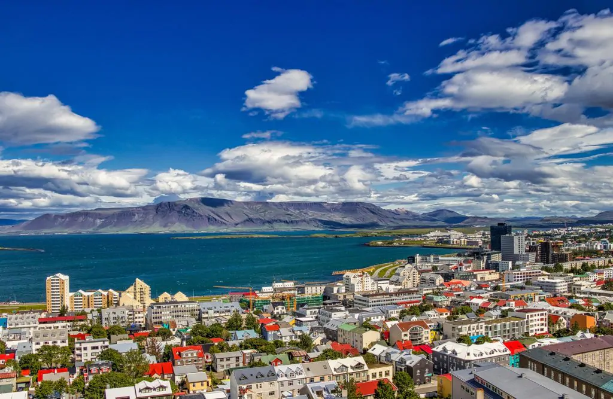
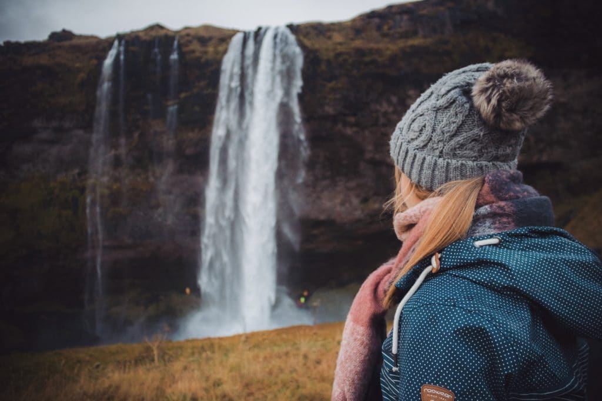
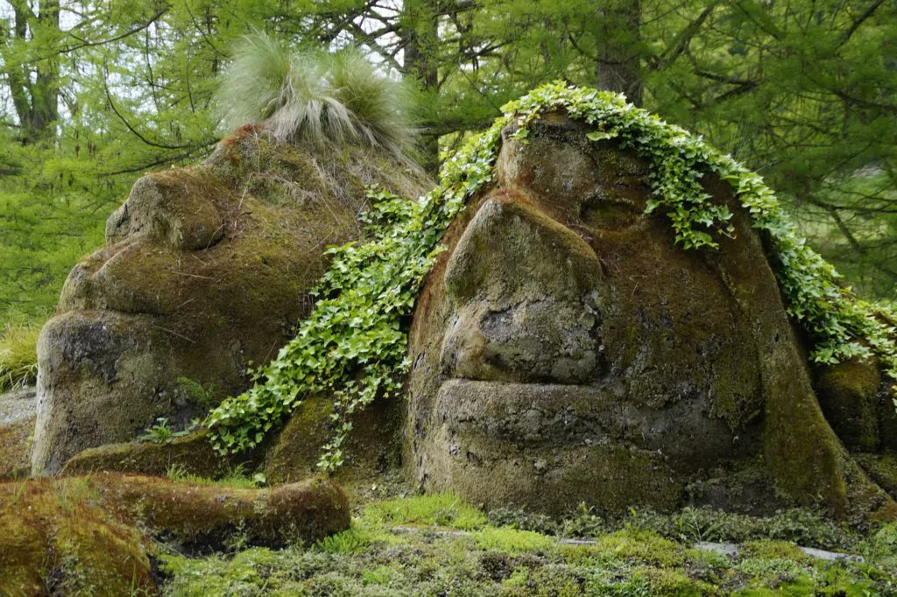
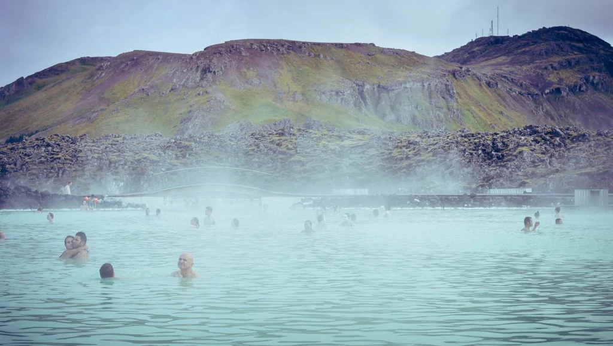
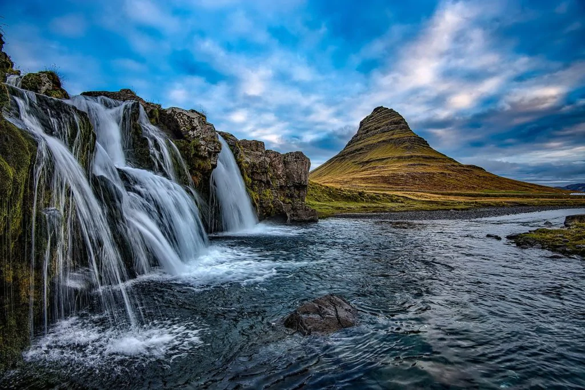
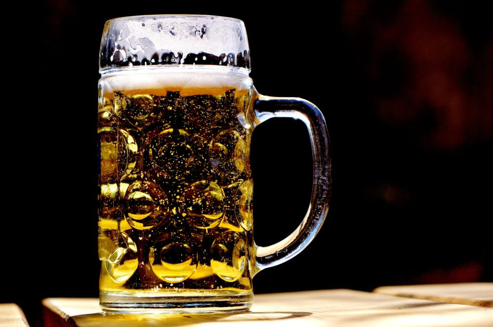

-

1. More than 60% of the Icelandic population live in the capital city, Reykjavik
Although very small, Reykjavik is the most northern capital city in the world and is home to more than half of the Icelandic population. This colourful and quirky city is packed with numerous restaurants, cafes, bars and museums and is extremely walkable, making it a perfect destination to explore by foot.
-

2. Iceland was the last place on earth to be settled by humans
Save the best for last? Iceland is known as one of the youngest landmasses on the planet and was one of the last places on earth to be settled by humans. Surprisingly, over 1,100 years ago Vikings from Norway discovered Iceland by accident.
-

3. Many Icelanders believe in elves and trolls
It has been said before that when it comes to water, Iceland has an abundance of it – in all forms. Be it in swimming pools, hot springs, geysers, lakes, glaciers, rivers or waterfalls, Iceland is...
-

4. You can swim outdoors in hot springs all year round
An Icelandic experience is not complete without a dip in a hot spring! The outdoor experience of bathing outdoors in volcanically heated pools dates back to Viking times. Hot springs can be found all around the country and come in all sizes and shapes. Be sure to keep your eyes peeled and your bathing suit in close reach. You don’t want to miss this experience!
-

5. Iceland is one of the most eco-friendly countries in the world
Iceland was recently ranked one of the eco-friendliest countries in the world and since almost all of the electricity in Iceland is produced using renewable energy sources, it’s easy to see why! The capital city of Reykjavik won the Nordic Nature and Environment Prize in 2014 and is working towards a goal of being a carbon-neutral city by 2040.
-
6. Iceland has the longest workweeks in Europe
One of the most interesting facts about Iceland is that, on average, Icelanders work 45 hours a week – longer than any other country in Europe! Did you know?
-

7. Beer was banned in Iceland until 1989
Iceland went through a prohibition of beer which began in 1915 and ended in 1989 after a referendum vote by the population. Now, every March 1st, the country celebrates “Bjórdagurinn” or “Beer Day” commemorating the end of a 74-year beer ban.